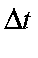

Next: IRC Up: Dynamic and Intrinsic Previous: Description


Next: IRC Up: Dynamic and Intrinsic Previous: Description
Force acting on any atom:
Acceleration due to force acting on each atom:
New velocity:
or:
That is, the change in velocity is equal to the integral over the time interval of the acceleration.
New position of atoms:
That is, the change in position is equal to the integral over the time interval of the velocity.
The velocity vector is accurate to the extent that it takes into account the previous velocity, the current acceleration, the predicted acceleration, and the change in predicted acceleration over the time interval. Very little error is introduced due to higher order contributions to the velocity; those that do occur are absorbed in a re-normalization of the magnitude of the velocity vector after each time interval.
The magnitude of , the time interval, is determined mainly by the factor needed to re-normalize the velocity vector. If it is significantly different from unity,  will be reduced; if it is very close to unity,
will be reduced; if it is very close to unity,  will be increased.
will be increased.
Even with all this, errors creep in and a system, started at the transition state, is unlikely to return precisely to the transition state unless an excess kinetic energy is supplied, for example 0.2 kcal/mol.
The calculation is carried out in Cartesian coordinates, and converted into internal coordinates for display. All Cartesian coordinates must be allowed to vary, in order to conserve angular and translational momentum.


Next: IRC Up: Dynamic and Intrinsic Previous: Description